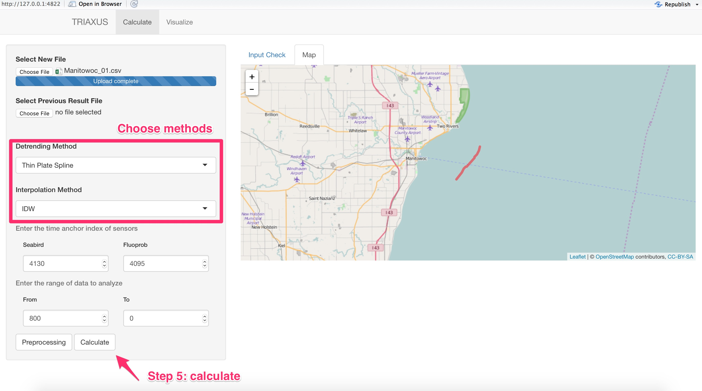
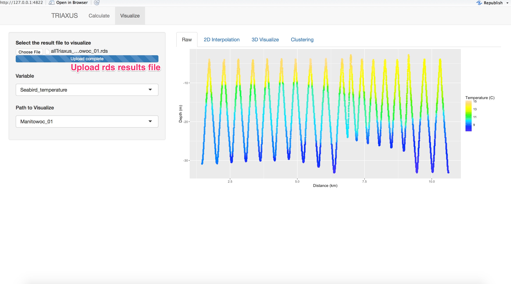
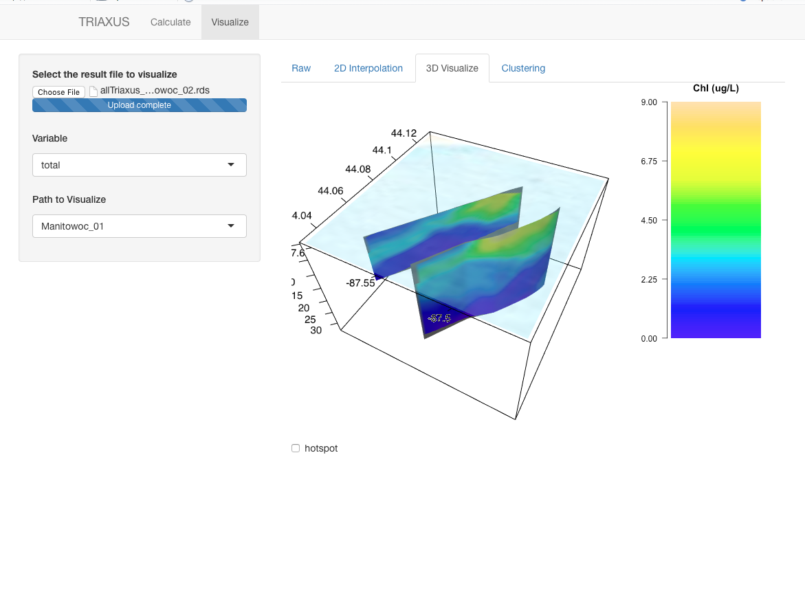
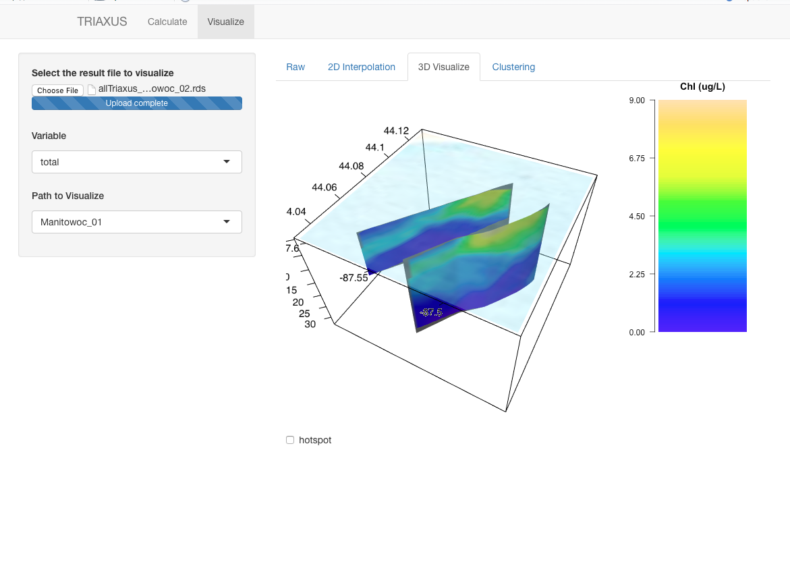

Welcome to TUVtools (Towed Undulating Vehicles Analyzing Tools).
This is a R shiny Web application developed to conduct a near-real-time analysis for water chemistry data sampled from towed undulating vehicles. The program will automatically interpolate the data, perform hotspot analysis and cluster analysis and then visualize the results in 2D and 3D. Below are snapshots of the application
Instruction
Currently the application should run in a local R shiny mode. We provide sample data from Manitowoc site to illustrate how to use the application.The example data can be downloaded here. After download the source code:
- Step 0: Modify config.R and install packages
In config.R, change
config$outputFolder <- "~/Developer/Triaxus/output/"
to
config$outputFolder <- $your_output_folder
The analyzed results will be stored in this local folder, and run the following to install packages
install.packages(c("leaflet","ggplot2","sp","gstat","RColorBrewer","rgl","dplyr","ggmap","lubridate","dismo","rglwidget","shiny","reshape2","dygraphs"))
To run, in R concole, type:
shiny::runApp('src')
- Step 1: Upload the file
Click "choose File" under Select New File and upload the Manitowoc_01.csv. The right plot will show the depths of SeaBird Sensors and Fluoprobe Sensors within the range of from/to above
If You want to combine the results of "Manitowoc_01" with previous results. Upload the previous results under Select Previous Result File.
Step 2: Find the index of sensors to align the data Change From/to to find the Seabird Index and FluoProbe Index. For example, by selecting from = 800 and to to = 10000. The red circle in the plot below should represents the same valley positions. Input the index in Suggested Anchor Index to the left.
Step 3: Choose the analyzing range TUV may float on the surface and the data will contains a lot of noise. Choose the data range so that the vehicle is actually undulating. For example, choose from = 800 and to = 10000, input the value to the left

- Step 4: Calculate By clicking "Preprocessing", The Map panel should pop up to show the path in the map.(You may need double click). Then Click "click". A notification will pop up on the upper right corner, indicating the status. The results will be saved into your ouputFolder with a name as "allTriaxus_upto_Manitowoc_01.rds". This is a file storing an R object that contains the raw data,cleaned data and interpolation results. This is also the file that should be uploaded in step 1 if you choose to continue analyzing Manitowoc_02.csv so that the results of Manitowoc2 will be combined with Manitowoc1.

- Step 5: Visualize Click Visualize Panel, upload the "allTriaxus_upto_XXX.rds" file. The program will perform as a visualization tool to visualize the path results contains in "allTriaxus_upto_XXX.rds" file, including Raw data visualization, interpolation visualization in 2D and 3D and cluster analysis. The 3D visualization might be slow since R shiny needs to send all plots information to the browser.

 



Developer
Wenzhao Xu (@stormxuwz), Ph.D in Civil and Environmental Engineering, University of Illinois at Urbana-Champaign